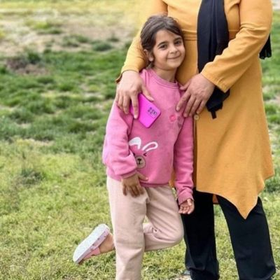

Narin: The Dark Face of an Era - 2
With Yüksel and Enes in Erzincan..

Erzincan Prison Visit
On Friday, July 4, I went to Erzincan Prison to visit mother Yüksel Güran and Narin’s older brother Enes Güran. If I had been able, I would also have gone to Erzurum to see Salim Güran, but I could not fit that visit into the same day, so I could not go there. I had said in the piece I wrote for bianet in February that I would visit Yüksel Güran, but so much happened in between — the intensity of the agenda, health trouble, surgery, etc. It seems fate reserved it for a hot July day.
Meeting with Yüksel Güran
After passing through doors and turnstiles at Erzincan Women’s Closed Prison and entering the area where the open visit would take place, I saw Mother Yüksel from afar. This woman, who is younger than me in age, had completely collapsed since I saw her at the Diyarbakır hearing on December 29; she had become tiny… Salim Güran does not say in vain, “What has happened to our family are the sort of things that, if they fell on a mountain, would crush the mountain.” The moment Yüksel Güran saw me from afar, she began to cry, I walked quickly to her and hugged her like I would my sister, we cried together, and cried…
In prison visits you cannot take anything with you. I asked the officers for tissues three times. Honestly, I had never thought I would be so overwhelmed with tears together with Mother Yüksel… I listened to her at length; the first thing she said again and again as we hugged and cried was, “I saw my Narin’s grave.” For the first time in months she had watched television the day before, she had seen Narin’s grave and heard the judge’s request for release. She described it as best as she could.
I sat with her for maybe two hours. What could I possibly say? I wished her strength and patience as best I could. I spoke of the beauty of the country of those who defend her. She told me about the letters and gifts sent to her. She said she held them and kissed them one by one as if embracing her daughter. She told me about her husband, who along with the children sets out from Diyarbakır at the crack of dawn and returns home in the dark of night, just to see her for one hour a week. She expressed, in her own way, the deep anxiety these journeys give her… I told Yüksel that I would also see Enes, that I would speak to him at length and try to lift his spirits. “Tell him they gave me a television,” she said. She even asked me to tell him that she had a refrigerator, although she did not. She added that since Erzincan is not very hot, she did not really need a refrigerator anyway. “But let Enes think I have a fridge, he’ll be happy,” she said. I told her, “Hold on Mrs. Yüksel, please, please do not let your mind fixate on dark thoughts, try to find something cheerful to watch on TV, once health is gone, it’s gone.” I spoke to a woman who had melted away like a candle about the need to protect her health and about the two little children waiting for her outside…
Yüksel Güran cried and cried, saying, “I couldn’t bring myself to throw away even the strands that fell when I combed my baby’s hair.” I told her about the women who fell captive to ISIS, about the women of Kurdistan who suffered the harshest forms of torment. I do not know why, but I thought that knowing these might help her endure this cruelty. She told me that because she had no other daughter besides Narin, her older sons Baran and Enes helped her with housework and with everything, how kind-hearted and how mature they were. “Enes would bake cake for his little siblings, he would do everything for them,” she said…
Meeting with Enes Güran
After Yüksel I went to see Enes. I found him much better than his mother in terms of morale. I think his feelings of anger and revolt have given way to the inner lightness and acceptance that comes from innocence. The fact that, outside, the number of people who believe in his and his family’s innocence is growing like a snowball, and the new evidence and reports that have emerged, have surely helped that lightness and confidence a great deal. For an 18-year-old, he sustained an extraordinarily mature conversation. I also tried, as best I could, to tell him a few things. I wanted to remind him that throughout history, sadly, many people have ended up imprisoned for crimes they did not commit. I told him this would pass, that it absolutely would pass. He told me he was reading books and spoke of the books he was reading. I told him, too, to try to keep his mind away from thoughts that would emotionally wound him. To be patient, even if it is not easy… He said he was exercising, that it helped. I had promised his mother. I hugged Enes tightly on her behalf as well. I hope it helped him feel a little better.
To leave Yüksel and Enes behind in Erzincan with such a deep feeling of helplessness was truly very painful. I would very much like, before too long, to visit them one day in their village, in their home, and to plant flowers together on Narin’s grave. These people have suffered so unjustly…
A happy family photo…
For example, this observation of mine must never be ignored: just like the mainstream media that could not get enough of spreading lies and sensational information about what happened to Narin, the media we call alternative also imposed a shared embargo on Narin’s family. Until March 29, 2025, there was almost not a single photograph of Narin together with her family, all of them appearing happy, carried in the media. One or two photos of her with her mother did find space in the media, but as you can see in this report[1], those photos were cropped from above Narin’s head height, cutting out mother Yüksel’s loving face as she embraced her, even though Narin’s head only reached her mother’s chest line.
Since Narin’s height only came up to mother Yüksel’s chest, her affectionate face as she embraced Narin was being cut out. Within what I previously called “the practice of dehumanizing and de-personing the Güran family and Tavşantepe,” there is also this cruel image management.

A Family Unseen in the Media
The first photo with the family suddenly appeared in the media on March 29, exactly seven months after the incident. Before that I had only seen one photo shared on accounts close to the family — in that one the mother was not present; in that photo, where the father and the children’s spotless, bright faces appeared, the media hardly gave it any space. Only family relatives were sharing it on social media. As for the March 29 photo, every media outlet that published it shared the story under the headline “Narin’s last photos with her family have emerged” and mentioned “a striking detail.”
That detail, accompanied by a kind of mental blackout, was mentioned in every report that published the photo. The detail in question was that Narin was wearing the same old red sandals on her feet that she was known to have been wearing on the day she was killed. The red sandals were the striking detail! No one said, “How many pairs of shoes did this child even have to wear on her feet such that you see news value in the fact that she was wearing the same pair that day?” Yet what almost everyone leaped over in that photo was the fact that it showed a very happy family, bound to one another with love.
No one could say “The striking detail is that this is a very happy family.” When I saw that photo, I immediately thought of Yüksel Güran’s words in the hearing: “We were a happy family.” She repeated this to me several times in prison: “We were so happy…” In order for that happiness to be shown even a little, only eight months after the incident did this video recording[2] from Narin’s last birthday — which you can watch by clicking the link — begin to circulate.

Real Happiness and the Blindness of Sensationalism
In the reports about the video, almost reluctantly, mention was made of how Narin runs and hugs her father, how her brother holds back her hair so it will not catch fire as she leans toward the cake, and how the mother says, “I’d sacrifice myself for you.” Today I know much better, and once again I repeat without the slightest hesitation, Narin was the princess of her family, the apple of the eye of her parents and of her two big brothers. Narin was a very loved and happy child. Each of them would rather have suffered the greatest harm themselves than let any harm come to her. The sensationalist media saw everything, absolutely everything extra, but for nearly a year they stubbornly refused to see this simple truth. They still refuse. Along with them, politicians, rights defenders, journalists, human rights organizations, bar associations, and sadly even women’s organizations did not see it either. Now, in any case, everyone has turned their heads entirely elsewhere.
Yet everyone who has uttered even a single sentence about this matter — everyone who, by adopting as fact the claim that Narin’s family were complicit in this horrific murder, produced news, broadcasts, or commentary — each and every one of them has a responsibility to address the new picture that is emerging. We cannot simply wait for the Court of Cassation process without doing anything. In which publicly known case up to today have we been able to quietly leave things to whatever ruling would be handed down in court proceedings? In which case of a murdered woman or child, or in which political case, have we ever been able to trust the court process?
Moreover, the clear and detailed dissent attached to the decision by the presiding judge in the appellate process already shows that the truth has not come out and that we have a responsibility to make an effort to understand the truth. Because at the beginning of the incident everyone spoke. This family went through all of this because of that. We cannot fall silent now. Unfortunately the situation is so grave that one feels embarrassed even while commenting; some individuals on social media who intervened in the case by accusing the Güran family went almost mad in the face of the possibility that the family might be innocent. And there was a troll army that was impossible to cope with. A shabby crowd on social media that increased follower counts by talking about Narin’s family…
Those Who Shut Their Eyes to the Truth
I am sorry to write this, but especially that crowd — if by some miracle little Narin were to emerge alive from somewhere — would want the family to kill her immediately so that they could be proven right… After the new evidence submitted to the appellate court, the report from India, and the enhanced images, can those who keep their eyes tightly shut to the possibility of the family’s innocence claim otherwise?
Sadly, Narin is not the first child to be mercilessly torn from this life. Years ago, in this piece at the following link[3], I covered in detail the first missing child case in modern Turkey that occupied the public for months and years. The little Ayla mentioned in that piece was never found. But there are countless — truly countless — children who, after going missing, were later found brutally murdered. Children disappear all over the world. And then there are those who are mercilessly killed in broad daylight before everyone’s eyes. Like beautiful Ahmet Minguzzi, stabbed to death in a crowded marketplace and under cameras. And the ones who killed him were children, too…
So why do I insist on treating the Narin case as something unprecedented? Because in none of these other cases were the families, while suffering a terrible grief, simultaneously branded as the child’s killers, tortured on the very day their child’s lifeless body was found, and thrown into prison. What followed Narin’s disappearance may well never have happened before in world history. The injustice is that great.
External References (3)